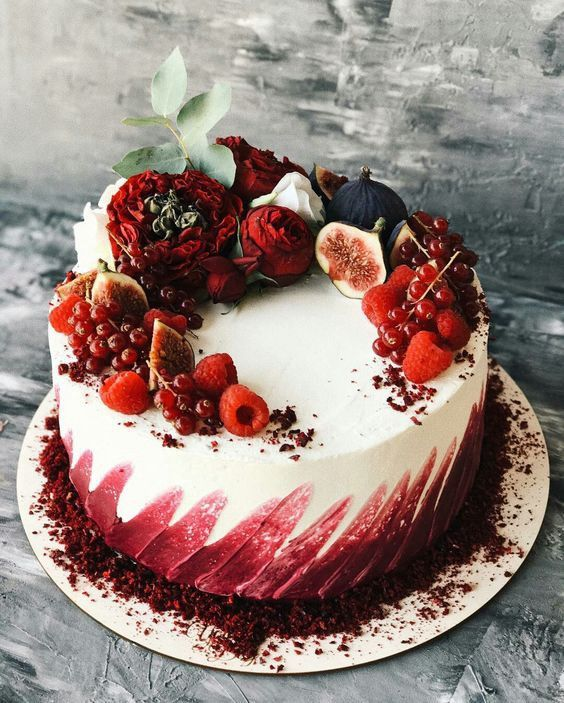
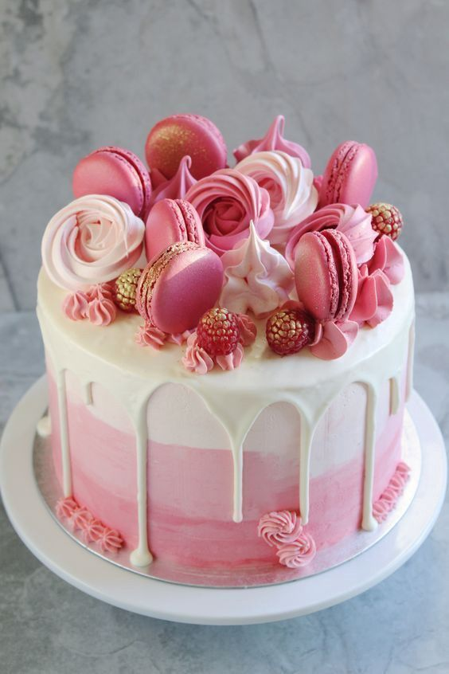

Le Cafe is on a mission to fill the gap between pod machine coffee drinkers and speciality coffee drinkers by offering fresh, hand-roasted speciality coffee straight to your door.
Here at Le Cafe we hand roast ethically sourced, single origin speciality coffees direct from our roastery in Rutland. Our coffees come to us from small farms and cooperatives around the world. This makes our coffees extra special because when a coffee runs out, it will be gone for good. Although this means we change our coffees from to time, just think about how many you will be able to try!
Not only does freshly roasted speciality coffee taste fantastic, but it does it’s bit for the world too. We pay between 30 and 150% more than the ‘going rate’ for our green beans to make sure the farmers who lovingly grow and harvest such a superior product are paid correctly for their work and efforts. We purchase our green coffee through a select number of UK based importers who have a direct relationship with farmers, estates and cooperatives globally.
As mentioned, from time to time we change our coffees as and when they run out. When this time comes, we use a process known as ‘coffee cupping’ to help us choose its replacement. Coffee cupping involves sampling a number of coffees (normally between 3 and 6 to give us some choice) which have been brewed in the same way. This way, any differences have come from the coffee alone and not the brewing method. Once we have ‘cupped’ every coffee and we agree, we place an order with the importer.
We firmly believe that fresh is best. With this statement in mind, we freshly hand roast coffee multiple times each week. Before we start roasting, we check the moisture and density of the green coffee beans. We do this initially so we can set the start temperature of the roast A bean that is grown at a higher altitude will usually have a higher density and vice versa. This is due to the range of temperatures that the bean will experience at their particular altitude while growing. Beans with a higher density will need a higher start temperature as they need more heat to penetrate their strong cell structure. After the initial roast, we continue to monitor the green coffee for moisture and density – so that we know we are storing it at its best too. During the roasting process, we use three sensory milestones known to us as grass, hay and bread. These are used as a way of monitoring the roast, and it helps to ensure we get each roast spot on every time. When each of these sensory milestones has passed, we listen out for the first crack.
As the roast develops, we will monitor the ‘rate of rise’. This is so we can ensure that each bean spends the right amount of time in each stage of the roast. By monitoring the roast in this way, we can predict when the first crack will be. If we have a coffee that has more fruity notes, we will aim for the first crack to be slightly earlier. On the other hand, if we have a coffee with notes of chocolate, for instance, we often aim for the first crack to be slightly later in the roast.
Our desserts consist of variations of tasted, textures, and appearances. They include a range of courses ranging from fruits or dried nuts to multi-ingredient cakes and pies. filled with fruit preserves or dessert sauces (like pastry cream), iced with buttercream or other icings, and decorated with marzipan, piped borders, or candied fruit. Our cakes are often served as a celebratory dish on ceremonial occasions like weddings, anniversaries, and birthdays and there's a wide variety to choose from.

